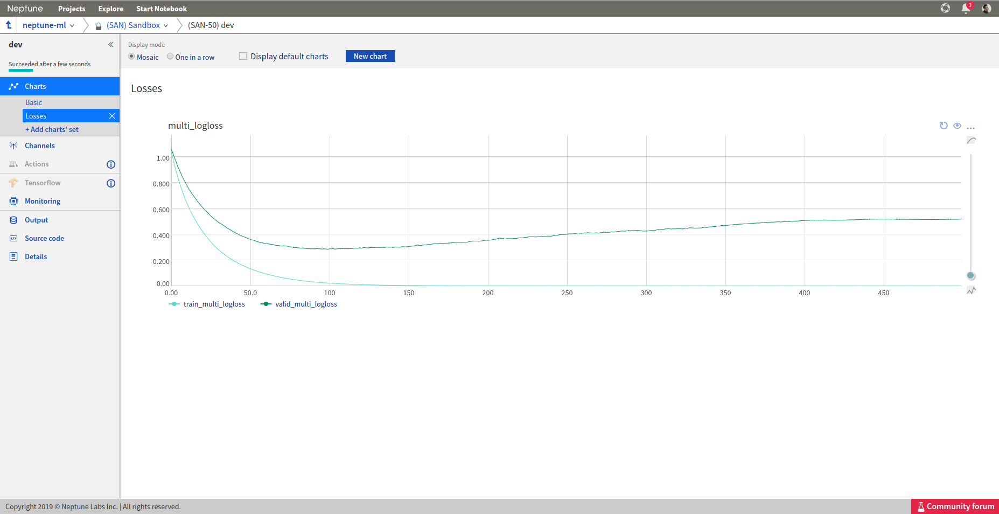
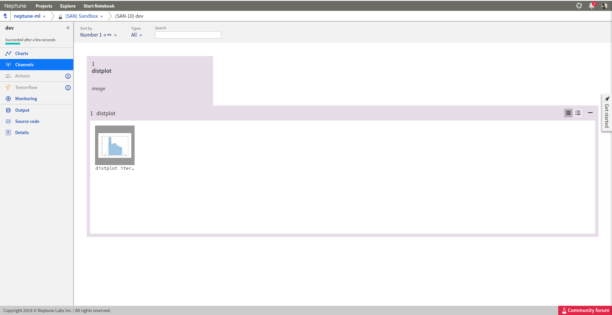

Keras
Log keras metrics
I have a training script written in keras. How do I adjust it to log metrics to Neptune?
{kind=link}
Step 1
Say your training script looks like this:
import keras
from keras import backend as K
mnist = keras.datasets.mnist
(x_train, y_train),(x_test, y_test) = mnist.load_data()
x_train, x_test = x_train / 255.0, x_test / 255.0
model = keras.models.Sequential([
keras.layers.Flatten(),
keras.layers.Dense(512, activation=K.relu),
keras.layers.Dropout(0.2),
keras.layers.Dense(10, activation=K.softmax)
])
model.compile(optimizer='adam',
loss='sparse_categorical_crossentropy',
metrics=['accuracy'])
model.fit(x_train, y_train, epochs=5)
Step 2
Now let’s use Keras Callback
from keras.callbacks import Callback
class NeptuneMonitor(Callback):
def on_epoch_end(self, epoch, logs={}):
innovative_metric = logs['acc'] - 2 * logs['loss']
neptune.send_metric('innovative_metric', epoch, innovative_metric)
Step 3
Instantiate it and add it to your callbacks list:
with neptune.create_experiment():
neptune_monitor = NeptuneMonitor()
model.fit(x_train, y_train, epochs=5, callbacks=[neptune_monitor])
All your metrics are now logged to Neptune:

PyTorch
Log PyTorch metrics
I have a training script written in PyTorch. How do I adjust it to log metrics to Neptune?
{kind=link}
Say your training script looks like this:
import torch
import torch.nn as nn
import torch.nn.functional as F
import torch.optim as optim
from torchvision import datasets, transforms
DEVICE = torch.device("cuda" if torch.cuda.is_available() else "cpu")
ITERATIONS = 10000
class Net(nn.Module):
def __init__(self):
super(Net, self).__init__()
self.conv1 = nn.Conv2d(1, 20, 5, 1)
self.conv2 = nn.Conv2d(20, 50, 5, 1)
self.fc1 = nn.Linear(4*4*50, 500)
self.fc2 = nn.Linear(500, 10)
def forward(self, x):
x = F.relu(self.conv1(x))
x = F.max_pool2d(x, 2, 2)
x = F.relu(self.conv2(x))
x = F.max_pool2d(x, 2, 2)
x = x.view(-1, 4*4*50)
x = F.relu(self.fc1(x))
x = self.fc2(x)
return F.log_softmax(x, dim=1)
train_loader = torch.utils.data.DataLoader(
datasets.MNIST('../data',
train=True,
download=True,
transform=transforms.Compose([
transforms.ToTensor(),
transforms.Normalize((0.1307,), (0.3081,))])
),
batch_size=64,
shuffle=True)
model = Net().to(DEVICE)
optimizer = optim.SGD(model.parameters(), lr=0.01, momentum=0.9)
for batch_idx, (data, target) in enumerate(train_loader):
data, target = data.to(DEVICE), target.to(DEVICE)
optimizer.zero_grad()
output = model(data)
loss = F.nll_loss(output, target)
loss.backward()
optimizer.step()
if batch_idx == ITERATIONS:
break
Add a snippet to the training loop, that sends your loss or metric to Neptune:
import neptune
neptune.init('shared/onboarding')
neptune.create_experiment()
...
for batch_idx, (data, target) in enumerate(train_loader):
...
neptune.send_metric('batch_loss', batch_idx, loss.data.cpu().numpy())
Your loss is now logged to Neptune:

LightGBM
Log LightGBM metrics
I have a training script written in LightGBM. How do I adjust it to log metrics to Neptune?
{kind=link}
Say your training script looks like this:
import lightgbm as lgb
from sklearn.model_selection import train_test_split
from sklearn.datasets import load_wine
data = load_wine()
X_train, X_test, y_train, y_test = train_test_split(data.data, data.target, test_size=0.1)
lgb_train = lgb.Dataset(X_train, y_train)
lgb_eval = lgb.Dataset(X_test, y_test, reference=lgb_train)
params = {
'boosting_type': 'gbdt',
'objective': 'multiclass',
'num_class': 3,
'num_leaves': 31,
'learning_rate': 0.05,
'feature_fraction': 0.9,
}
gbm = lgb.train(params,
lgb_train,
num_boost_round=500,
valid_sets=[lgb_train, lgb_eval],
valid_names=['train','valid'],
)
Now, you need to use lightGBM callbacks to pass log metrics to Neptune:
Step 1
Take this callback:
import neptune
neptune.init('shared/onboarding')
neptune.create_experiment()
def neptune_monitor():
def callback(env):
for name, loss_name, loss_value, _ in env.evaluation_result_list:
neptune.send_metric('{}_{}'.format(name, loss_name), x=env.iteration, y=loss_value)
return callback
Step 2
Pass it to lgb.train object via callbacks parameter:
gbm = lgb.train(params,
lgb_train,
num_boost_round=500,
valid_sets=[lgb_train, lgb_eval],
valid_names=['train','valid'],
callbacks=[neptune_monitor()],
)
All your metrics are now logged to Neptune
{kind=link}
Matplotlib
Log matplotlib figure to Neptune
How to log charts generated in matplotlib, like confusion matrix or distribution in Neptune?
{kind=link}
Step 1
Neptune-client supports logging matplotlib figures. Examples:
# matplotlib figure example 1
from matplotlib import pyplot
pyplot.plot([1, 2, 3, 4])
pyplot.ylabel('some numbers')
experiment.log_image('plots', plt.gcf())
# matplotlib figure example 2
from matplotlib import pyplot
import numpy
numpy.random.seed(19680801)
data = numpy.random.randn(2, 100)
figure, axs = pyplot.subplots(2, 2, figsize=(5, 5))
axs[0, 0].hist(data[0])
axs[1, 0].scatter(data[0], data[1])
axs[0, 1].plot(data[0], data[1])
axs[1, 1].hist2d(data[0], data[1])
experiment.log_image('diagrams', figure)
Step 2
Explore it in the browser:
{kind=link}